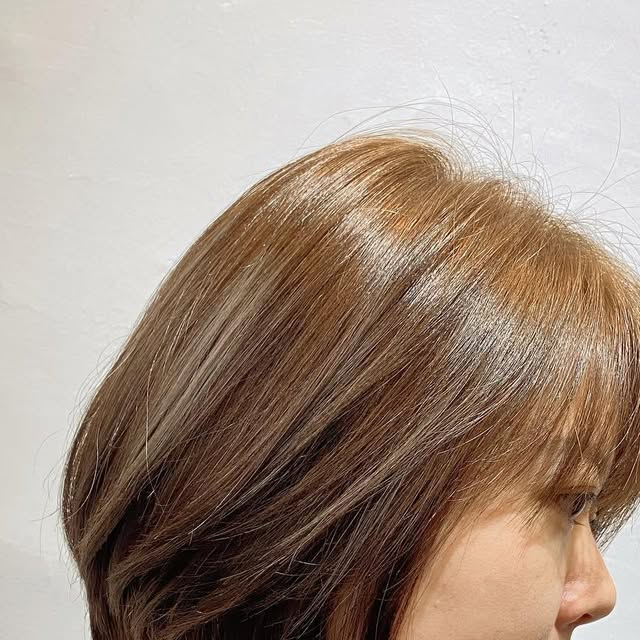
俐落短鮑伯
線條俐落的下巴長度，光澤感十足、乾淨有型。
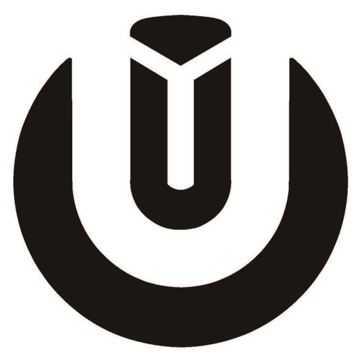
Yu Hair & Coffee點擊圖片可放大檢視
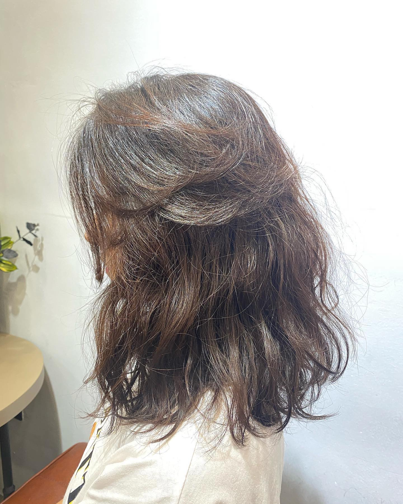
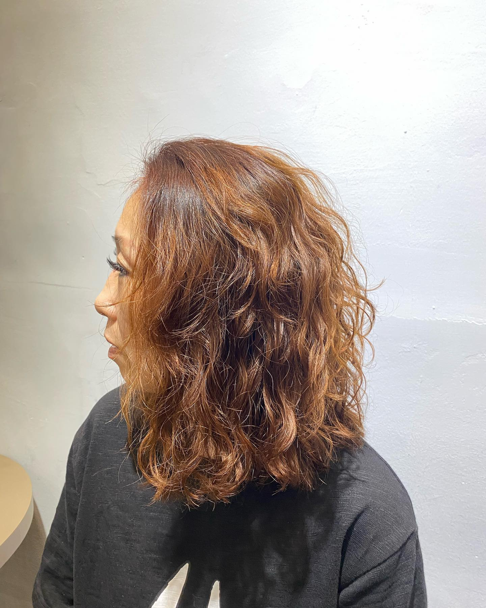
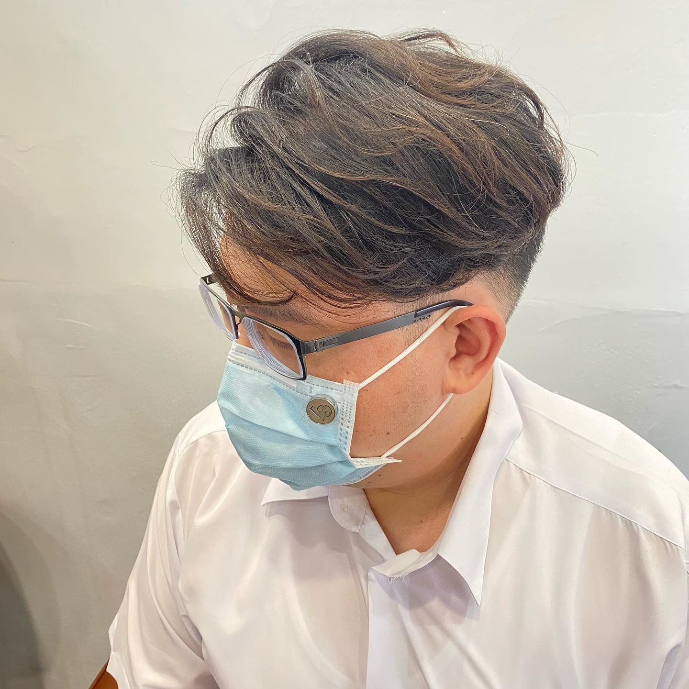
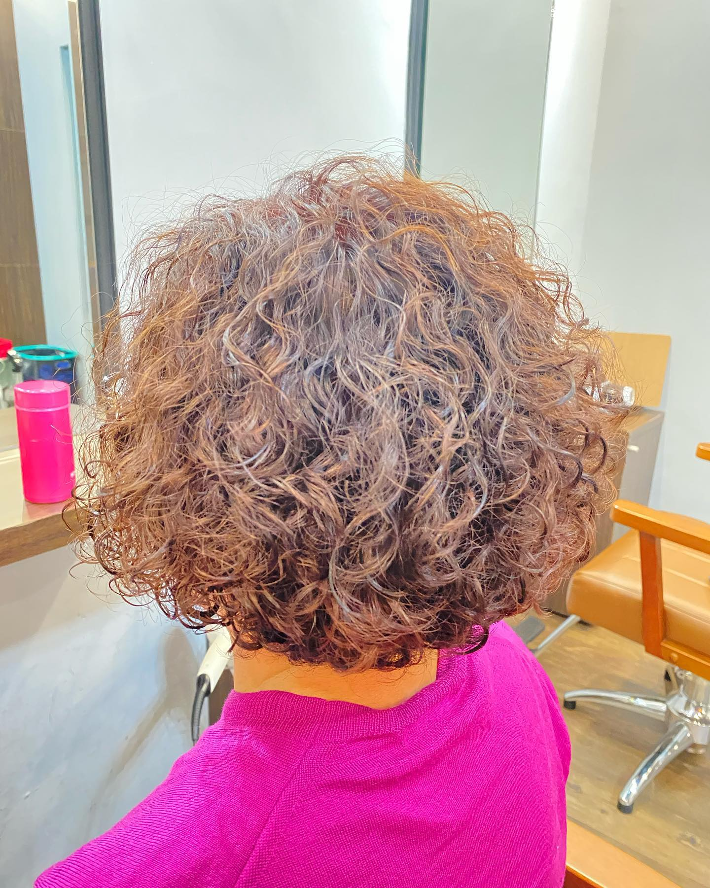
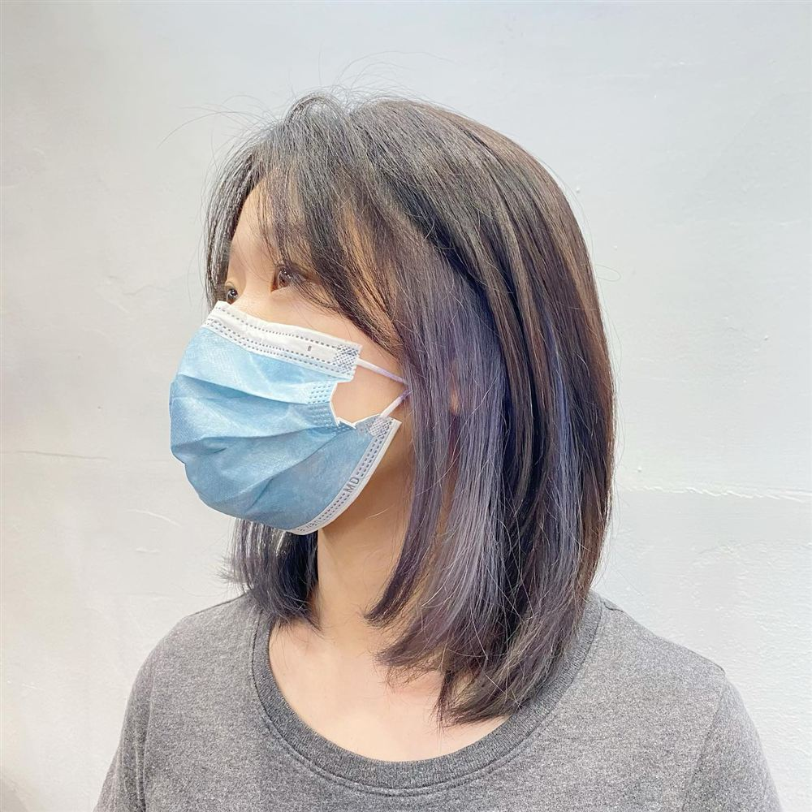
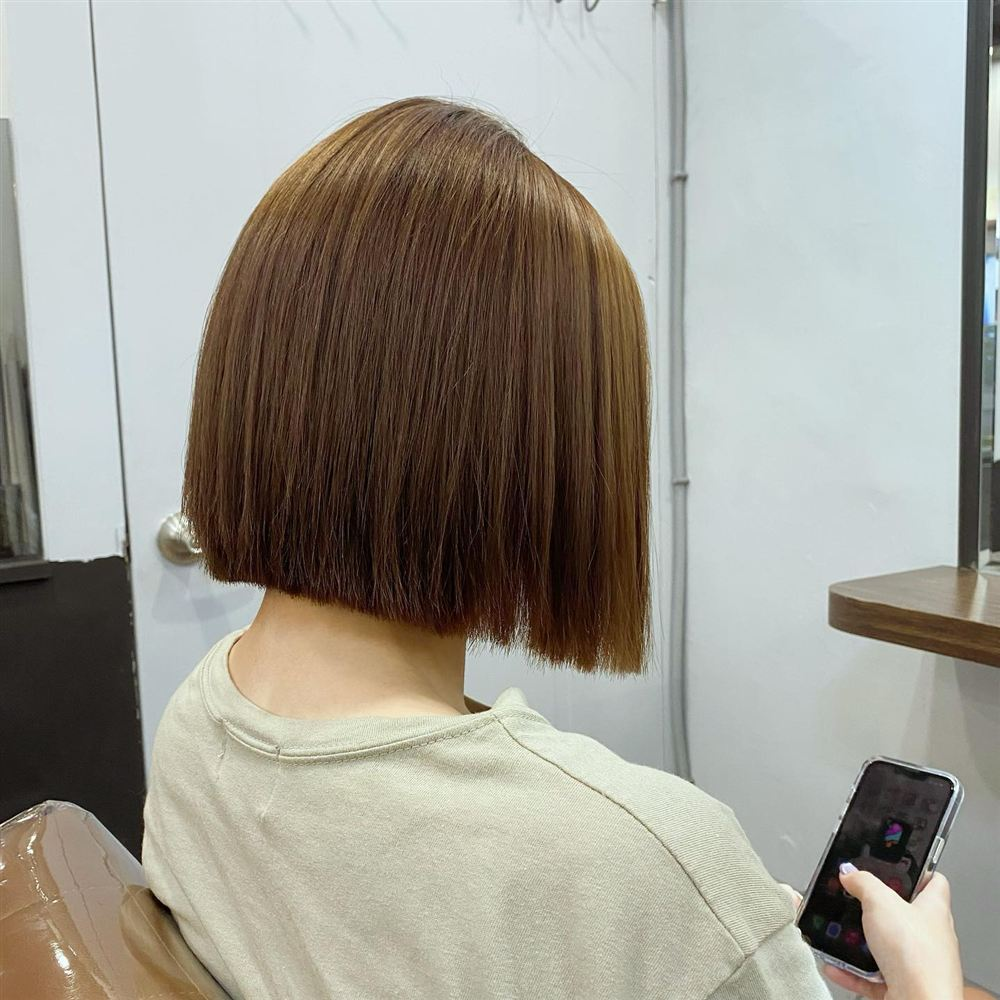
質感、低維護、有光澤，是今年秋冬的關鍵字

線條俐落的下巴長度，光澤感十足、乾淨有型。
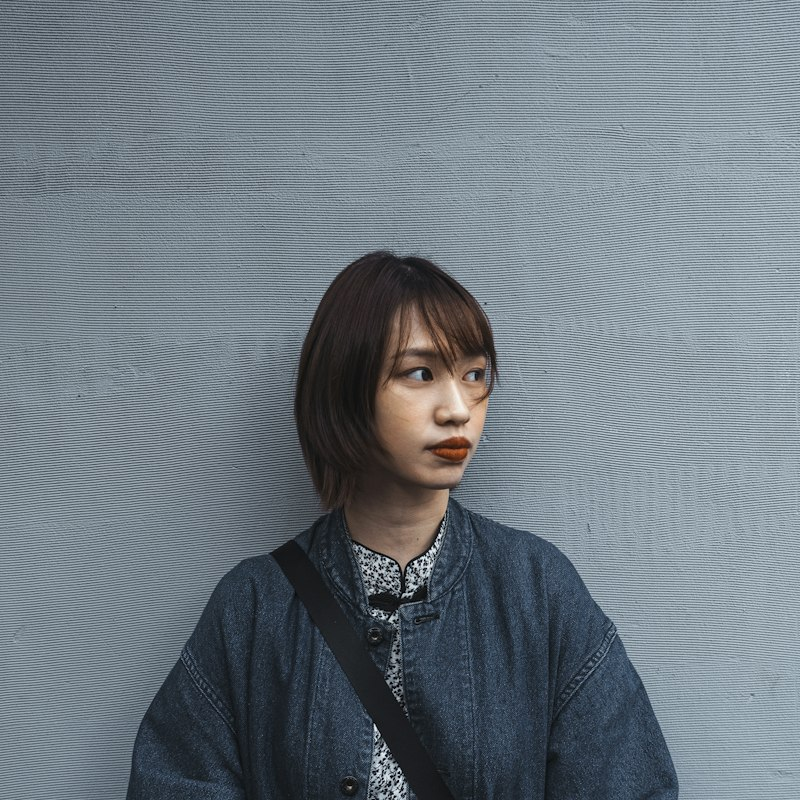
保留髮量的齊切輪廓，自然俐落、好整理。
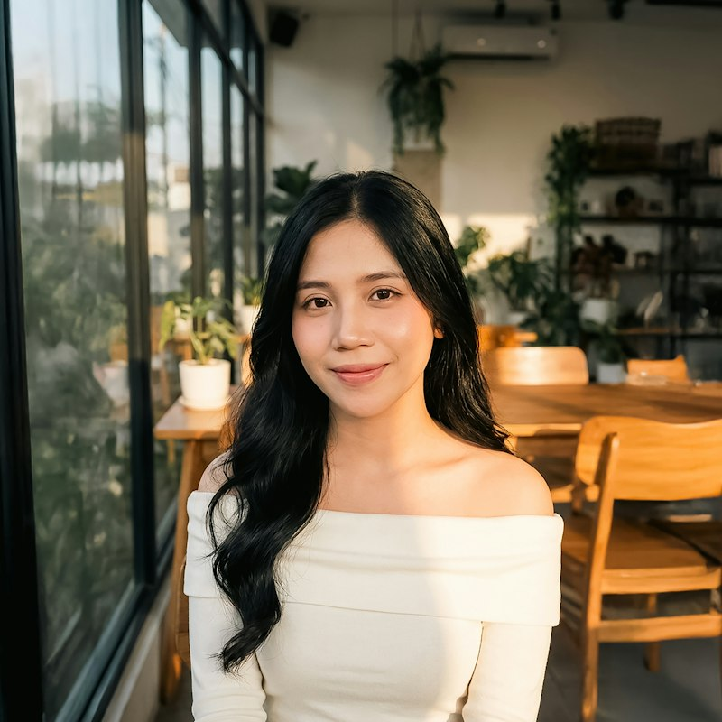
臉周柔和層次與波浪髮尾，手繞即可成型。
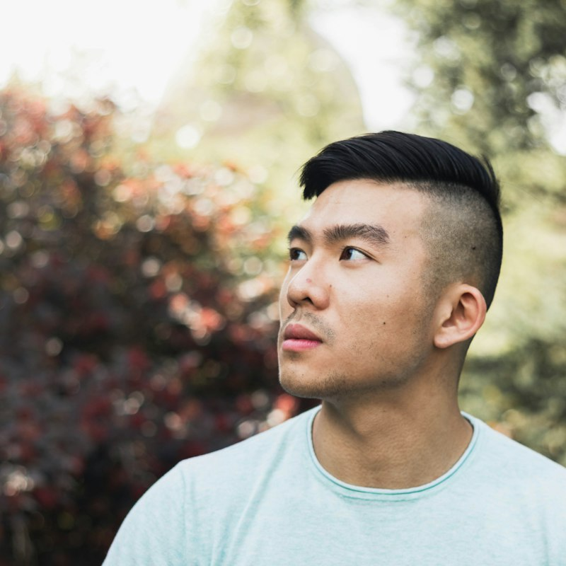
側邊乾淨線條搭配紋理，好整理又有型。
髮型示意照片來自 Unsplash（攝影師：Young Shih、Dynamic Wang、Roni Darmanto、Rohan G），非本店作品。趨勢整理自 2026 年美髮媒體報導，更多靈感可參考 BEAUTY 美人圈 2026 髮型趨勢；實際適合的款式與顏色，歡迎預約現場諮詢。
單位：新台幣（元）｜短／中／長為髮長，實際金額以現場諮詢為準
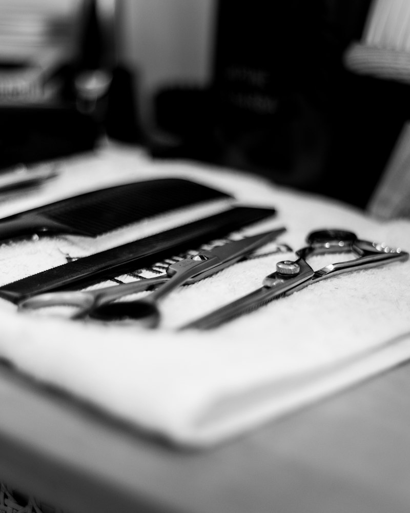
我是 Avi。每一位客人的髮質、臉型和生活習慣都不同，我會先好好溝通，再設計出適合你、回家也好整理的髮型。
在 Yu，剪髮不只是整理頭髮，也是一段放鬆的時光。英國鄉村風的空間裡瀰漫著咖啡香，等待染、燙的時候，可以安心坐下來喝一杯。
店內座位不多，建議預約時間，外帶也很方便。
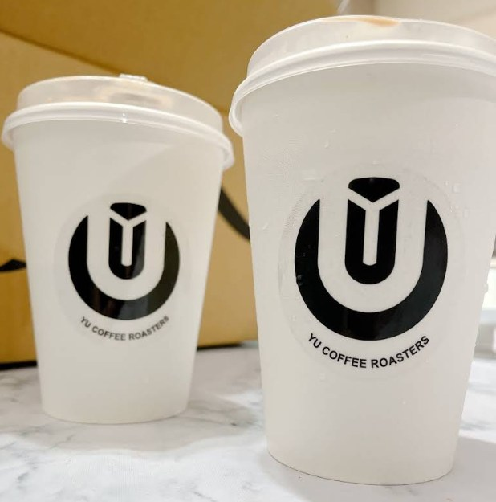
Google 地圖 4.8 ★（51 則評論）｜以下節錄自客人的 Google 評論
設計師事先的溝通還有提供燙後的視覺照片，過程中很細心剪／燙，除此還有提供店內的好喝咖啡。— Queena Ting ★★★★★
已經在這邊用頭髮兩年⋯設計師剪髮技術精湛！很有耐心溝通，也懂我適合的髮色和髮型。— 范羽萱 ★★★★★
已連續 3 年都在這燙頭髮、剪頭髮，設計師很細心、貼心，很值得推薦朋友一起來整理頭髮。— 黃靖惠 ★★★★★
環境舒適～設計師超級專業，會針對個人需求給建議，還有按摩頭部的服務很舒服。— Hung yu Wang ★★★★★
不會像其他間一直推銷產品或是推優惠活動感到不自在，吹整造型很喜歡！還有咖啡很好喝！— Ying Ying ★★★★★
四歲兒子這輩子第一次在外面正式剪髮，非常細心，也溫柔，讓孩子很有安全感！咖啡也非常順口。— 王心怡 ★★★★★